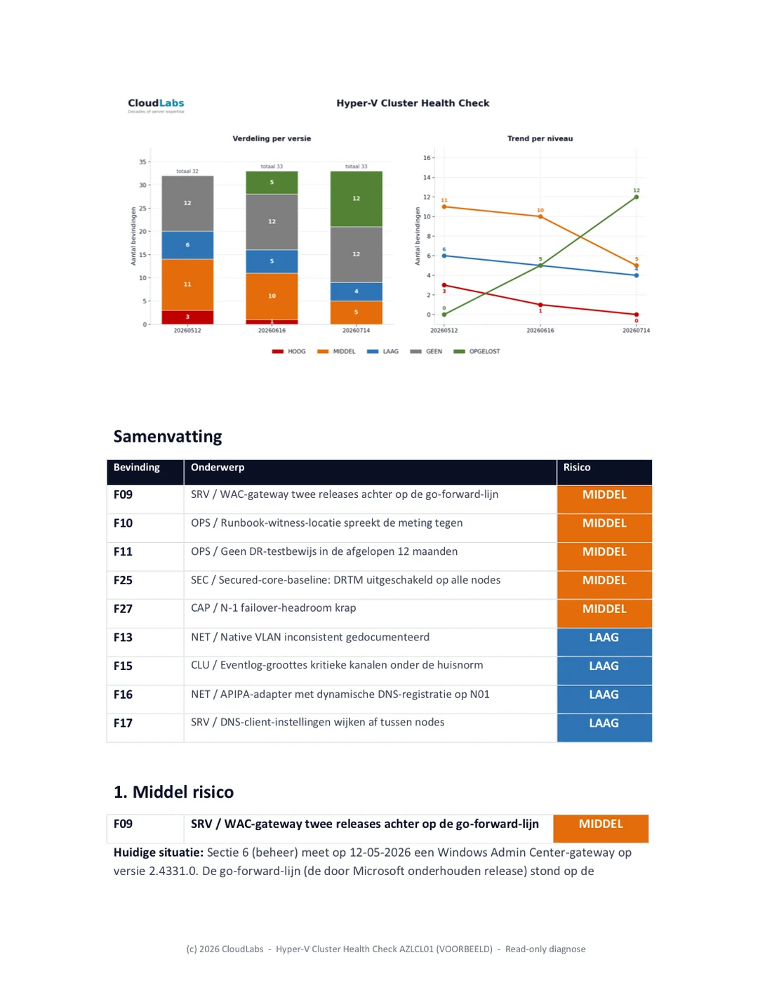

CloudLabs / Blog / Cluster Health
Hoe we de Hyper-V cluster health check opvolgen
Een Hyper-V cluster health check die eindigt met één PDF is een momentopname. En een momentopname begint te verouderen zodra je dingen gaat repareren. Het serieus aanpakken van risico's en bevindingen neemt weken in beslag en verloopt in meerdere rondes. De waarde van de opdracht wordt uiteindelijk bepaald door de vraag of iedereen kan zien wat er is veranderd, wat er nog openstaat en welke kant de trend opgaat. Dat is een rapportagediscipline, geen eenmalig document. Dit artikel gaat over hoe je die discipline toepast.
Het patroon dat CloudLabs bij elke terugkerende health check gebruikt, bestaat uit drie samenhangende bouwstenen: een delta-rapport dat na een vervolgmeting laat zien wat er is veranderd en waarom, een restrisico-rapport dat als actuele to-dolijst dient en een risico-trend grafiek die het management in één oogopslag laat zien welke kant het opgaat. Geen van deze voorbeelden bevat in dit artikel een klantnaam. Het gaat om de werkwijze en die is overdraagbaar.
1. Waarom één health check-rapport niet genoeg is
De eerste oplevering van een health check is een document met bevindingen: een genummerde lijst met issues, elk voorzien van een risiconiveau, bewijs en een aanbeveling. Dat document klopt op de dag waarop het wordt opgeleverd en begint daarna meteen te verouderen. Dat is tenslotte precies het doel van de oplevering: iemand gaat nu dingen repareren. Twee weken later is misschien de helft van de HOOG (Risico)-bevindingen gesloten, heeft één fix een onverwachte bijwerking gehad, heeft de klant ondertussen een domain controller vervangen en beschrijft de oorspronkelijke PDF een cluster dat inmiddels niet meer bestaat. Daar kun je op twee manieren mee omgaan.
Je kunt elke ronde het volledige bevindingendocument opnieuw uitbrengen. Het nadeel is dat de lezer wordt bedolven onder ongewijzigde tekst en dat het lastig wordt om te zien wat er tussen de verschillende versies daadwerkelijk is gebeurd. Of je rapporteert de delta: je houdt de baseline als systeem van vastlegging en publiceert per ronde een gericht document dat precies beschrijft wat er is veranderd. Daar voeg je een uitgedunde weergave van de openstaande punten aan toe, plus een grafiek die het verloop laat zien. Die tweede aanpak houdt een opdracht ook na zes of acht weken werk nog leesbaar.
Het baseline-bevindingendocument blijft het anker. Elk later rapport verwijst naar de oorspronkelijke bevindingsnummers, zodat een lezer een afsluiting altijd kan terugleiden naar de oorspronkelijke beschrijving. Wat van ronde tot ronde verandert, is de delta daarbovenop.
2. De drie samenhangende bouwstenen van een voortgangsrapport
Een voortgangsronde levert drie dingen op. Ze zijn bewust van elkaar gescheiden, omdat ze drie verschillende groepen lezers bedienen.
- Het delta-rapport. Voor de vastlegging. Per bevinding beschrijft het het oude niveau, het nieuwe niveau, de reden voor de verschuiving en het bewijs. Het bevat afsluitingen, verlagingen, heropeningen en nieuwe bevindingen, allemaal met hetzelfde gewicht. Dit is het document dat een auditor of een opvolgende engineer leest om de historie te begrijpen.
- Het restrisico-rapport. Voor het team dat het werk uitvoert. Alleen de nog openstaande bevindingen, geordend op risico, waarbij opgeloste en niet-van-toepassing-zijnde items bewust zijn weggelaten. Dit is de to-dolijst voor de volgende ronde.
- De risico-trend grafiek. Voor het management. Eén beeld met het aantal bevindingen per risiconiveau over elke rapportversie, zodat de richting van de ontwikkeling duidelijk is zonder een woord proza te hoeven lezen.
Die scheiding doet ertoe. Stop je alles in één bestand, dan moet het team dat de lijst afwerkt door opgeloste historie waden. Tegelijkertijd moet het management door engineering-detail heen om dat ene getal te vinden waar het om gaat. Drie samenhangende bouwstenen, drie doelgroepen, allemaal gebaseerd op dezelfde set metingen.
3. Het delta-rapport: wat is er veranderd en waarom?
Het delta-rapport is opgebouwd per bevinding. Elke bevinding die is verschoven, krijgt een eigen blok: het nummer, de titel, het nieuwe risiconiveau en een gedetailleerde beschrijving. Die alinea's verwijzen naar de meting die de verschuiving rechtvaardigt. De categorieën van beweging liggen vast:
- Opgelost. De root cause is gerepareerd en de vervolgmeting bevestigt dat het probleem is verdwenen. Bijvoorbeeld: een ontbrekende cumulatieve update is nu op elke node geïnstalleerd en de buildnummers bewijzen dat. De bevinding kan worden gesloten.
- Verlaagd. Het risico is verminderd, maar niet weggenomen. De bevinding blijft open op een lager niveau, waarbij het restrisico expliciet wordt benoemd.
- Heropend. Een bevinding die gesloten was of op een laag niveau stond, is weer omhooggegaan. Meestal omdat een fix een bijwerking had of omdat een onschuldig ogende conditie na onderhoud opnieuw is ontstaan. Dit wordt net zo prominent gerapporteerd als een afsluiting.
- Nieuw. Iets wat de laatste meting aan het licht heeft gebracht en wat niet in scope was of eerder nog niet aanwezig was.
De objectiviteit van het delta-rapport zit in die regel met de 'huidige situatie'. Je schrijft niet: 'patchen klaar'. Je schrijft wat je daadwerkelijk hebt gemeten: het tijdstip van de validation run, het aantal geslaagde tests, de waarschuwingen die nog resteren en waarom die resterende waarschuwingen wel of niet onschuldig zijn. Een lezer die er niet bij was, moet het oordeel uit het bewijs kunnen reconstrueren. Dat is het verschil tussen een statusupdate en een delta-rapport.
Een geanonimiseerd fragment uit een delta-rapport laat de vier soorten beweging zien in de eigen stijl van het rapport. De bevindingsnummers en beschrijvingen zijn hier generiek; de vorm is het echte werk:
F12 Cumulatieve update ontbreekt op clusternodes HOOG -> OPGELOST
Huidige situatie: juni-CU op 12 juni op alle nodes geïnstalleerd; buildnummers
na reboot geverifieerd. Root cause gefixt. Bevinding gesloten.
F08 Storage-headroom ongelijk verdeeld over de nodes HOOG -> MIDDEL
Huidige situatie: failover-headroom binnen de site hersteld (drukste node
442 -> 204 GB in gebruik); scheefstand tussen sites resteert. Risico verlaagd,
niet gesloten.
F20 CSV-eigenaarschap scheef naar één node na patchen OPGELOST -> LAAG
Huidige situatie: Cluster-Aware Updating liet de meeste CSV's bij de laatst
gepatchte node. Opnieuw verdeeld en herbevestigd; op LAAG gehouden als
terugkerende post-onderhoudscheck in plaats van gesloten.
F31 Backup-uitsluitingspad niet meer bereikbaar MIDDEL -> OPGELOST
Huidige situatie: workload gedecommissioneerd en verwijderd; herscan bevestigt
dat het pad weg is, niet slechts onbereikbaar. Gesloten.Elke regel bevat zijn eigen rechtvaardiging. Een afsluiting steunt op een geverifieerd buildnummer, een verlaging benoemt het restrisico, een heropening wordt openlijk gemeld en Opgelost wordt alleen toegekend wanneer het probleem daadwerkelijk weg is en niet alleen buiten bereik. Samen gelezen stellen deze regels een reviewer in staat om iedere niveauwijziging te auditen zonder één vergadering te hoeven bijwonen.

4. Het restrisico-rapport: de werklijst
Het restrisico-rapport is qua karakter de tegenpool van het delta-rapport. Het delta-rapport gaat over historie en is volledig. Het restrisico-rapport gaat over het heden en is meedogenloos: het bevat alleen de bevindingen die nog openstaan, geordend op HOOG, daarna MIDDEL en vervolgens LAAG. Alles wat is opgelost of niet van toepassing is, wordt bewust weggelaten. Een to-dolijst waar afgerond werk nog tussen staat, is ruis.
Dit is het document dat het klantteam daadwerkelijk opent tijdens het volgende maintenance window. Elke openstaande bevinding bevat de meest recente meetgegevens, niet de cijfers uit de baseline. Een bevinding die van HOOG naar MIDDEL is verlaagd, laat dus de huidige MIDDEL-werkelijkheid zien en niet het oorspronkelijke alarm. Waar een bevinding gedeeltelijk is opgelost, bijvoorbeeld een storage-scheefstand die op de meeste volumes is hersteld, maar niet op alle, toont het document de status per item. Zo blijft het resterende werk zichtbaar op het niveau waarop het daadwerkelijk moet worden uitgevoerd en niet alleen op het niveau van de oorspronkelijke bevinding.
De trend chart bovenaan dit document plaatsen, vóór de openstaande bevindingen, geeft de lezer eerst de context en daarna het detail: hier staan we, dit is wat er nog resteert. Het is een klein verschil, maar het verandert de manier waarop het document wordt gelezen.

Was je laatste health check één PDF en leeft de remediatie sindsdien in iemands hoofd en een spreadsheet, dan heb je geen verdedigbaar beeld van de vraag of het cluster beter is geworden of alleen maar drukker.
Een CloudLabs Hyper-V Cluster Health Check is daarom opgebouwd uit rondes met een delta-rapport en een trend chart, zodat de voortgang wordt gemeten en niet alleen wordt beweerd.
Plan een kennismaking voor een Health Check →5. De risico-trend grafiek: het beeld in één oogopslag
De grafiek is het onderdeel dat het management onthoudt. Hij toont het aantal bevindingen per risiconiveau over iedere rapportversie: als een gestapelde balk per versie, met daarboven een trendlijn per niveau. Eén blik beantwoordt de twee vragen die het management uiteindelijk stelt: gaat HOOG naar nul en kruipt er ergens iets weer omhoog?
Onderstaande grafiek komt uit de fictieve Noorderlicht-voorbeeldopdracht, met drie meetrondes over een opdracht van meerdere weken. Klik op de grafiek om deze te vergroten:

Dezelfde cijfers in een tabel, voor schermlezers en snelle naslag:
| Ernst | Baseline | Ronde 1 | Ronde 2 |
|---|---|---|---|
| HOOG | 3 | 1 | 0 |
| MIDDEL | 11 | 10 | 5 |
| LAAG | 6 | 5 | 4 |
| GEEN | 12 | 12 | 12 |
| OPGELOST | 0 | 5 | 12 |
Drie dingen in die tabel zijn het waard om hardop te zeggen. Ten eerste gaat HOOG over de drie rondes naar nul, precies het beeld waar het management om vraagt, maar niet doordat bevindingen verdwijnen: ze gaan naar OPGELOST en blijven meetellen. Ten tweede is OPGELOST een eigen kolom die alleen maar groeit (0, 5, 12). Een bevinding die daadwerkelijk is gerepareerd, hoort nooit stilletjes uit het rapport te verdwijnen; door haar zichtbaar te houden kan de trend niet worden gemanipuleerd door gesloten items simpelweg uit de rapportage te verwijderen. Ten derde blijft GEEN vlak op 12: dat zijn de items die bij de baseline zijn gecontroleerd en in orde bevonden en dat ook blijven, het bewijs van wat is geverifieerd en geen stilte. Het totale aantal bevindingen beweegt nauwelijks (32, 33, 33) terwijl het risico erin wegloopt van rood naar groen en dat is precies waarom je ieder niveau in iedere versie telt.
Bouw de grafiek met dezelfde risicokleuren die je overal elders in de rapportage gebruikt, zodat een lezer die één risicolabel heeft gezien diezelfde betekenis direct in de grafiek herkent. HOOG rood, MIDDEL oranje, LAAG blauw, GEEN grijs, OPGELOST groen. Die consistentie tussen het delta-rapport, het restrisico-rapport en de grafiek zorgt ervoor dat iemand tussen de drie samenhangende bouwstenen kan bewegen zonder telkens opnieuw de legenda te moeten leren.
6. De discipline achter de kleuren
Een taxonomie met vijf niveaus werkt alleen als de grenzen ervan worden bewaakt. De twee niveaus die het vaakst verkeerd worden gebruikt, zitten aan de boven- en onderkant van het 'goed nieuws'-bereik. Daarom krijgen juist die expliciete regels.
Opgelost versus Verlaagd. Opgelost is gereserveerd voor een root cause die daadwerkelijk is gerepareerd en vervolgens opnieuw is bevestigd. Is het risico alleen ingeperkt, dan is de bevinding Verlaagd, niet Opgelost. Een workload die achter een VLAN is geïsoleerd zodat er niets meer bij kan, is een echte en waardevolle risicobeperking. Maar het onderliggende object bestaat nog steeds. Daarom is het LAAG en niet Opgelost, totdat het probleem werkelijk is opgelost. Het feit dat iets vanaf de plek waar je toevallig staat niet meer bereikbaar is, betekent niet dat de oorzaak is verdwenen. Die grens bewaken is misschien wel de belangrijkste rapportagebeslissing van de hele opdracht. Het is wat voorkomt dat de trend chart iedereen een mooier beeld voorschotelt dan de werkelijkheid rechtvaardigt.
Heropend versus gefixt-gebleven. Een bevinding die terugkomt, wordt zichtbaar heropend. Na een maintenance ronde komt het regelmatig voor dat een op het eerste gezicht onschuldige issue op iedere node terugkeert. De juiste aanpak is dan om die bevinding op het passende niveau, met uitleg, opnieuw in de lijst op te nemen. Niet om haar stilletjes gesloten te laten omdat ze in de vorige ronde al was gesloten. De lezer vertrouwt de trend juist omdat regressies er ook in zichtbaar worden.
7. Vervolgmeting maakt het objectief
Elke ronde begint op dezelfde manier als de baseline: met hetzelfde of een verbeterd read-only inventarisatiescript, uitgevoerd vanaf de eigen management server van de klant, aangevuld met een nieuwe cluster-validation. Niets in het voortgangsrapport komt uit een vergadering of uit iemands geheugen. Een bevinding verandert alleen van niveau op basis van een meting die na de fix is uitgevoerd. Het rapport verwijst daarbij expliciet naar die meting: het inventarisatiebestand, het tijdstip van de validatie en de specifieke counter.
Dit vangt ook de bewegende delen op die een statusupdate-achtige manier van rapporteren mist. Een domain controller die halverwege de opdracht is vervangen. Een node die tijdelijk uit het management-subnet viel. Een validatiewaarschuwing die vóór de patch-reboots is gemeten en in de volgende ronde alweer verouderd blijkt. Omdat de meting opnieuw wordt uitgevoerd in plaats van onthouden, beschrijft het rapport het cluster zoals het is op de dag van de vervolgmeting. Niet zoals het was toen het werk werd ingepland.
De mechaniek achter die read-only inventarisatie en de pre-flight die hem zelfdocumenterend maakt, staat beschreven in Van Health Check tot Patch Night: de CloudLabs-werkwijze in de praktijk. De voortgangsrapportage in dit artikel is de laag die daar overheen ligt en de ontwikkeling over meerdere meetrondes volgt.
8. Het herhaalbaar maken
De reden om de drie samenhangende bouwstenen te standaardiseren, is eenvoudig: de volgende ronde en de volgende opdracht moeten ze niet opnieuw hoeven uitvinden. Het patroon dat standhoudt:
- Houd het baseline-bevindingendocument als systeem van vastlegging en hernummer de bevindingen nooit. Elk later rapport verwijst naar die oorspronkelijke nummers.
- Genereer het delta-rapport, het restrisico-rapport en de trend chart vanuit dezelfde meetronde, zodat de drie elkaar nooit kunnen tegenspreken.
- Gebruik één risicotaxonomie en één kleurenset voor alle drie en bewaak de grens voor Opgelost strikt.
- Zet de trend chart bovenaan het restrisico-rapport, zodat de context vóór het detail komt.
- Verwijs bij elke niveauwijziging naar de run die daar de basis voor vormt, zodat iemand die niet bij de uitvoering aanwezig was het rapport kan reconstrueren.
Doe je dat, dan blijft een health check niet hangen als een PDF die langzaam veroudert op een gedeelde schijf. Het wordt een gemeten traject dat iedereen in één beeld kan lezen en waarop je in het detail kunt vertrouwen. Dat is de oplevering die klanten daadwerkelijk bewaren.
Plan een kennismaking voor een Hyper-V Cluster Health Check →
Veelgestelde vragen
Eén per meetronde. In de praktijk betekent dat: na iedere batch fixes die groot genoeg is om het risicobeeld te veranderen. Bij een typische opdracht gebeurt dat elke paar maanden, maar de klant kan om een hogere frequentie vragen, zeker als er veel issues zijn om op te lossen. Iedere ronde wordt dezelfde read-only inventarisatie en validatie opnieuw uitgevoerd, zodat elk rapport gebaseerd is op een verse meting en niet op een statusvergadering.
Opgelost betekent dat de root cause daadwerkelijk is gerepareerd en bij de vervolgmeting is verdwenen. Verlaagd betekent dat het risico is verminderd, maar dat de oorzaak nog steeds aanwezig is. Bijvoorbeeld een workload die met een VLAN is geïsoleerd in plaats van volledig verwijderd. Een risicoverlagende maatregel brengt een bevinding naar een lager niveau. Het sluit de bevinding niet. Die grens strikt bewaken voorkomt dat de trend chart een mooier beeld geeft dan de werkelijkheid rechtvaardigt.
Het volledige rapport bevat de historie, de opgeloste items en de context. Dat is wat je nodig hebt voor de audit trail. Het restrisico-rapport bevat alleen wat nog openstaat, geordend op risico. Dat is waar het team in de volgende ronde daadwerkelijk mee aan de slag gaat. Twee doelgroepen, twee documenten.
Elke ronde rapporteert naast opgeloste bevindingen ook heropende en nieuw ontdekte bevindingen. Een bevinding kan weer een niveau omhooggaan als een fix een bijwerking heeft geïntroduceerd. Die heropening wordt met hetzelfde gewicht getoond als een afsluiting. De trend chart telt ieder risiconiveau in iedere versie, zodat een regressie zichtbaar wordt als een balk die weer groeit.
Ja. De risico-trend grafiek toont het aantal bevindingen per risiconiveau over iedere rapportversie, als gestapelde balken met een trendlijn per niveau. Eén beeld laat zien of HOOG naar nul gaat en of er ergens iets weer omhoog kruipt. De grafiek wordt gegenereerd uit dezelfde cijfers die de gedetailleerde rapporten voeden.